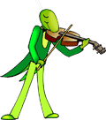
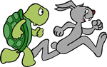

1. The Ant and the Grasshopper
 On one fine summer's day in a field a Grasshopper was hopping about in a musical mood. An ant passed by bearing along with great toil an ear of corn he was taking to the nest. The grasshopper invited the ant to sit for a chat with him. But the ant refused saying that "I am storing up food for winter". " Why do not you do the same?" asked the ant to the grasshopper. "Pooh! Why bother about winter?" said the Grasshopper; we have got enough food at present.
2. Tortoise and The Hare
 The hare was once boasting of his speed before the other animals. "I have never yet been beaten," said he, "when I put forth my full speed. I challenge anyone here to race with me." The tortoise said quietly, "I accept your challenge." "That is a good joke," said the hare. "I could dance around you all the way." "Keep your boasting until you've beaten," answered the tortoise. "Shall we race?"
3. The Lion's Share
One day, a lion, a fox, a jackal, and a wolf went hunting together. All day long they tried hard, but could not find anything satisfactory. It was only in the late afternoon that they could catch a deer. The four beasts surrounded the poor animal and killed it as fast as they could. Then they decided to share their food. The lion was the lord of the jungle and superior to all in strength. Hence, the other creatures agreed when he proposed to share the food for all. Placing one of its paws upon the dead animal, the lion said, "You see, as a member of the hunting party, it is my right to receive one of these portions." The others nodded in agreement.